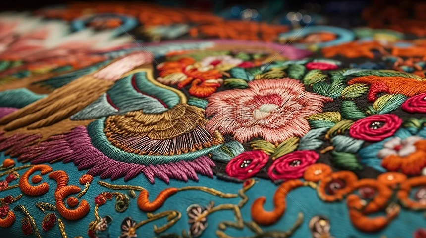
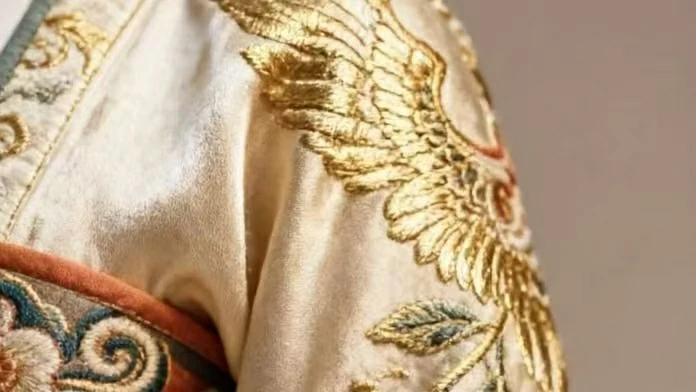
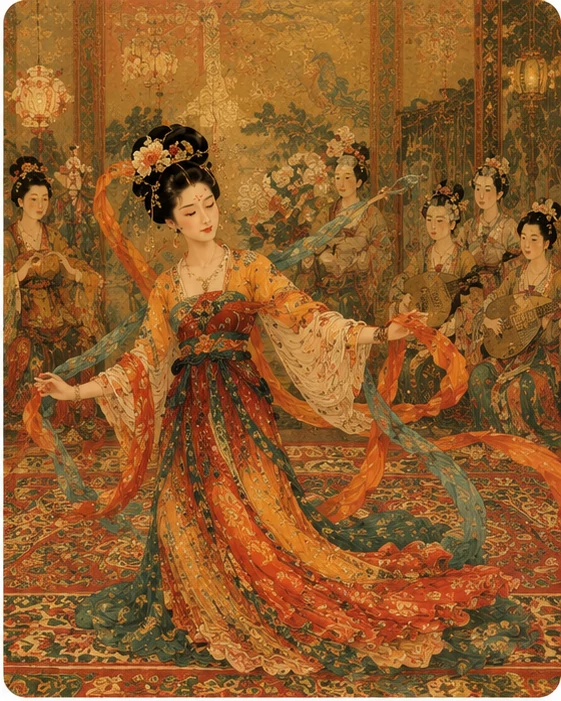
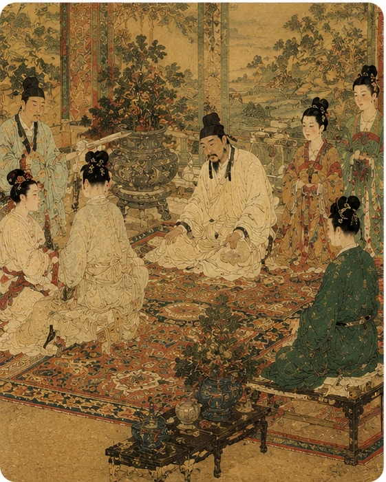
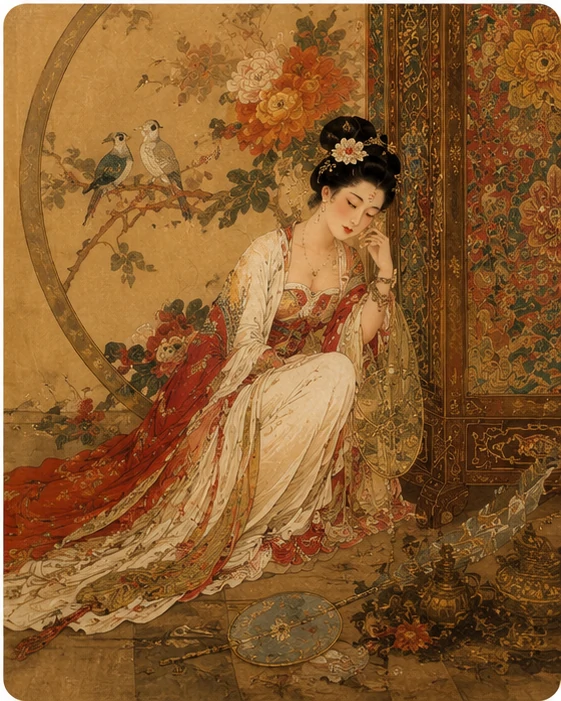
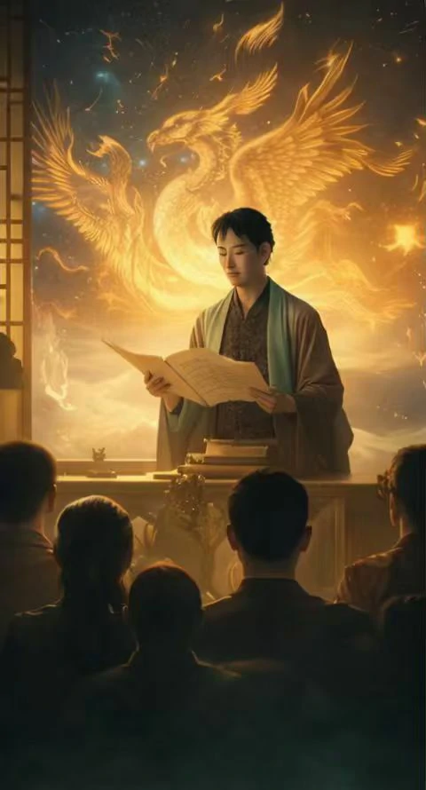

拖动丝线
模拟走针
调整方向
针脚需缓, 不可急, 金线需顺光而行
华丽的纹样背后, 藏着许多不易察觉的时刻 丝线在指尖穿行, 纹样在反复推敲中逐渐成形, 耐心与专注被一点点织入布面 那些无法被一眼看见的部分, 恰恰构成了一件作品最动人的质地
针脚需缓
不可急
金线需顺光而行
当视线慢慢靠近, 许多曾被一眼略过的细节开始显现 金线的流光、丝绸的纹理、玉石的温润与花钿的精巧, 不再只是远观时的印象, 而成为能够被细细体会的存在

你眼前看到的不只是材料表面, 而是一种曾经真正贴近身体、礼仪与日常生活的文明质感 当镜头靠近之后, 原本模糊的工艺经验开始重新变得具体, 也更容易被理解和学习
当视线不断靠近, 器物与技艺中的细节也会渐渐展开 一根丝线的纹理、一片花钿的层次、一枚饰件的雕琢痕迹, 都不再停留于远观时的轮廓, 而是以更丰富的面貌呈现在眼前
不同的技艺有不同的节奏 有人从一针一线开始认识刺绣, 有人透过花钿与妆容理解盛唐风尚, 也有人在香气氤氲间读懂古人的生活情趣 每一次驻足, 都是一次新的发现

华丽的纹样背后, 藏着许多不易察觉的时刻 丝线在指尖穿行, 纹样在反复推敲中逐渐成形, 耐心与专注被一点点织入布面 那些无法被一眼看见的部分, 恰恰构成了一件作品最动人的质地
针脚需缓
不可急
金线需顺光而行

这一组研习更强调女性美学与仪态感 用户会像被带到玉石妆台前, 尝试不同位置、比例与搭配, 理解盛唐审美的分寸感
此式更近盛唐
花钿位置可略高半寸
发饰不必繁, 留一点空才更见气韵

用户会在这组练习中观察不同香材之间的关系, 并通过烟雾轨迹、空间气氛与节令暗示, 理解香艺与生活场景之间的联结
此香偏烈
更适合冬日夜宴
若要留香更长, 便让木香再稳一些
时间并不总是轰轰烈烈地向前 它藏在妆台前添上的一笔花钿里, 藏在衣袖间渐渐变化的纹样中, 也藏在礼仪与日常习惯细微的转变之间 随着画卷徐徐展开, 这些变化也会被慢慢看见

风格更清秀克制, 线条与服饰尚保留着较为安静的秩序感

审美逐渐丰盛, 色彩、材质与体量都开始显露出更充沛的生命力

技艺与仪态趋向细腻, 生活气质也更强调克制中的层次

时代余韵渐深, 纹样与器饰承载了更复杂也更感性的情绪色泽
技艺被传承下来, 不只是为了被记住 它会融入新的设计、影像与创作, 在不断变化的时代里继续讲述自己的故事 那些来自过去的灵感, 也将在新的表达中获得新的生命力

将非遗纹样、女性气质与未来东方构图重新组合成新的视觉叙事

把镜头、节奏、文案与情绪组织成更适合传播的文化故事

让传承人拥有更柔和也更准确的表达方式, 把技艺重新讲给今天的人听